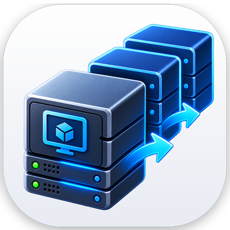
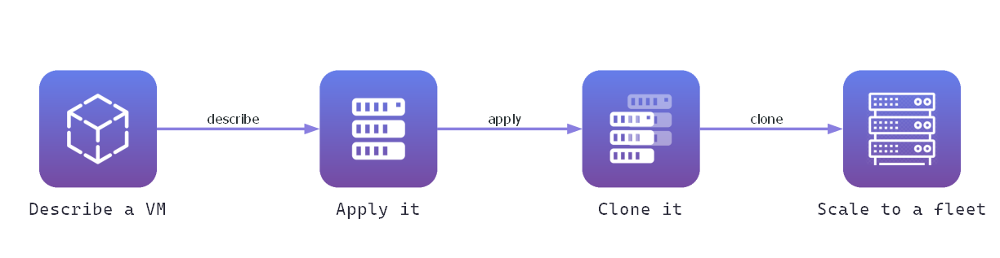

vmctl
virtual machines as code

A command-line tool for managing virtual machines with config-as-code. Export a VM's configuration to YAML / JSON, re-create it reproducibly, and manage whole fleets with batch operations — across a pluggable set of hypervisor providers.
Python 3.8+ · VirtualBox · libvirt/QEMU-KVM · plain QEMU · VMware Workstation
See it in action
Capture a VM, preview the plan, then --execute to build it. Nothing changes until you do.
$ vmctl list NAME STATUS ubuntu-server running windows-dev stopped $ vmctl export ubuntu-server -o ubuntu-server.yaml Exported to ubuntu-server.yaml (yaml) $ vmctl import ubuntu-server.yaml --new-name test-server Dry-run — nothing changed. Add --execute to build it: 1: VBoxManage createvm --name test-server --ostype Ubuntu_64 --register 2: VBoxManage modifyvm test-server --memory 4096 --cpus 4 ... $ vmctl import ubuntu-server.yaml --new-name test-server --execute ✓ Created test-server # the same file, on a different hypervisor $ vmctl -p libvirt import ubuntu-server.yaml --new-name test-server --execute Warning: storage[0].format: vdi is not supported, used qcow2 instead ✓ Created test-server # and keep it that way $ vmctl diff test-server ubuntu-server.yaml ~ memory.mb vm 4096 file 8192 $ vmctl apply ubuntu-server.yaml --execute ✓ Applied — 1 change, nothing else touched
How it works
Data-driven, and safe by default.

Export
Capture a live VM — CPU, memory, firmware, disks, networks — into a YAML/JSON document.
Version
Commit the config to Git. Your infrastructure is now reviewable, diffable, reproducible.
Validate
Check the config against the provider's capabilities before anything is built.
Apply
Every build is a dry-run by default — it prints the exact commands. Add --execute to actually create the VM(s), or vmctl apply to change only what drifted.
Features
One CLI, config-as-code underneath.
📄 Config-as-Code
Export and import VM configurations as YAML or JSON — version-control your infrastructure.
🧩 Four hypervisors
One interface, one config file: VirtualBox, libvirt/QEMU-KVM, plain QEMU and VMware Workstation. A provider can also ship as its own package.
🔄 Full lifecycle
list, start, stop (graceful or --force), status, edit, delete — all from one tool.
📦 Batch operations
Stamp out many VMs from a single template file with per-instance overrides: batch create cluster.yaml.
🛟 Dry-run by default
Every state-changing command prints the exact provider commands first. Nothing runs without --execute — and --out saves the plan as a script, or the hypervisor's own artifact.
✅ Validated up front
validate checks a config against the provider's capabilities — each one measured against the running product — and surfaces problems before you build.
🔁 Drift, and the fix
diff shows how a VM differs from its file and exits 1 when it does; apply changes only what drifted. Only what the file states is applied, so a short file stays a narrow instruction.
📸 Snapshots
snapshot take · list · restore · delete on all four hypervisors, with the differences stated: where a description is stored, and which disk formats can hold one at all.
🚚 Migrate between them
Move a VM from VirtualBox to libvirt, or QEMU to VMware. What does not carry over exactly is reported, never dropped — and --with-disks converts the images too.
🔌 Reach the guest
NAT port forwarding as part of the config, so ssh -p 2222 localhost survives a round trip. extends: keeps the shared half of a lab in one file.
🩺 Does it work here?
doctor checks the host, the hypervisor and the disk space. selftest goes further: it creates a throwaway VM, reads it back, snapshots, starts, stops and deletes it — asserting each step.
Commands
listreadexportimportcreateeditapplydiffstartstopstatusdeletevalidatebatchsnapshotmigrateconvertcapabilitiesprovidersdoctorselftestschemacompletionSupported hardware
What a VM config can describe. Which hypervisor can do which part is not a guess: every table was measured against the running product, and vmctl capabilities prints it with its provenance.
💽 Buses
IDE · SATA · SCSI · SAS · NVMe · virtio-blk · virtio-scsi · USB · floppy, with a measured matrix of which carries which device kind.
📀 Devices
Disks · CD/DVD · floppy in one list, because that is what they are. Mark a disk solid-state, pass TRIM through, insert a medium, set the boot order.
🗂️ Disk formats
VDI · VMDK · VHD · VHDX · qcow2 · QED · Parallels · RAW, thin or thick — and each provider declares which it can create rather than merely attach.
🔐 Firmware
BIOS · EFI (32/64) · Secure Boot · TPM.
🌐 Networking
NAT · Bridged · Host-only · Internal · NAT Network, with the card named by what the guest sees — virtio, e1000, e1000e, vmxnet3 and more — plus NAT port forwarding.
⚙️ Machine & CPU
Boot from disk · dvd · floppy · network. Architecture, chipset (q35, pc), a CPU topology and model where the hypervisor has them — and a clear report where it does not.
Quick install
A wheel from the latest release — pulls in its one dependency (PyYAML) automatically.
pip install https://github.com/abdelhaleemahmed/vmctl/releases/download/v3.0.0/vmctl-3.0.0-py3-none-any.whl
You also need the tools for the hypervisor you use — VBoxManage, virsh, qemu-img or vmrun. vmctl doctor says what it found, and vmctl providers which are usable here.
For a virtual-environment setup and the full usage guide, see the
installation guide.